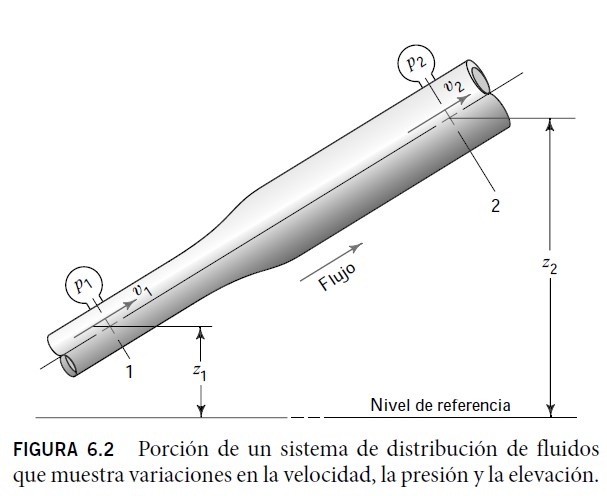
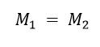
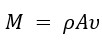
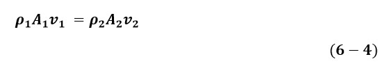
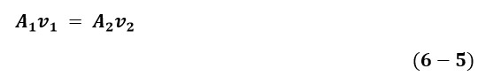
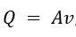
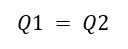

Ecuación de continuidad
Se utiliza para relacionar la densidad del fluido, el área del flujo y la velocidad de flujo en dos secciones del sistema en el que existe un flujo estable. Es válida para todos los fluidos, ya sean gases o líquidos. Para entender mejor la ecuación a continuación se presenta la siguiente situación:
Considere la tubería de la figura 6.2. Un fluido fluye desde la sección 1 hasta la sección 2 a una velocidad constante. Es decir, la cantidad de fluido que fluye a lo largo de cualquier sección en una cantidad de tiempo dada es constante. Esto se conoce como flujo estable. Ahora bien, si no se añade, almacena o elimina fluido entre la sección 1 y la sección 2, entonces la masa de fluido que fluye por la sección 2 en una determinada cantidad de tiempo debe ser la misma que la que fluye por la sección 1.

Nota: Mecánica de Fluidos. 7 ed. (2015. pág. 120). por Mott, R.L. & Untener J.A.
Esto se puede expresar en términos de la rapidez del flujo de masa como

o bien, puesto que , se tiene

La ecuación (6-4) es un enunciado matemático del principio de continuidad y se denomina ecuación de continuidad. Si el fluido presente en la tubería de la figura 6.2 es un líquido que puede considerarse incompresible, entonces los términos ⍴1 y ⍴2 de la ecuación (6-4) son iguales y pueden cancelarse a partir de la ecuación (6-4). Entonces la ecuación se convierte en:
- Ecuación de continuidad para líquidos

o bien, puesto que , se tiene

La ecuación (6-5) es la ecuación de continuidad aplicada a los líquidos; establece que, para un flujo estable, la rapidez del flujo de volumen es la misma en cualquier sección. También se puede utilizar para gases que fluyan a baja velocidad, es decir, a menos de 100 m/s, con un error pequeño.
Mott, R.L. & Untener J.A. (2015). Mecánica de Fluidos. 7 ed., pág. 120. México: Pearson Educación de México, S.A. de C.V.